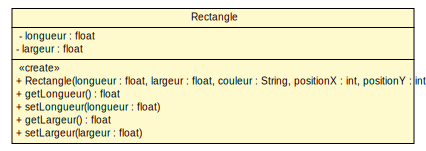
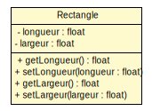
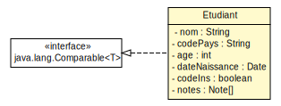
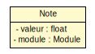
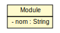
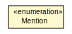
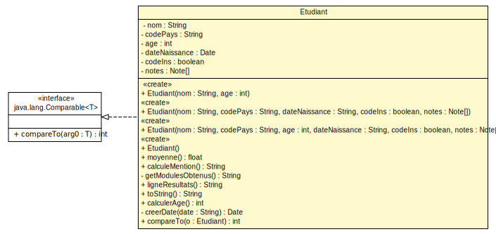
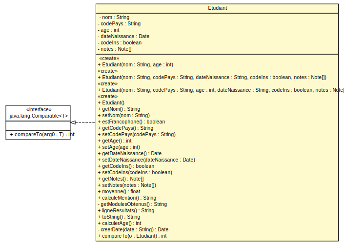
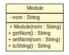
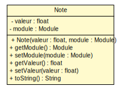

<!doctype html>
<html lang="en">
    <head>
        <meta charset="utf-8">
        <title>reveal-md</title>
        <link rel="stylesheet" href="./css/reveal.css">
        <link rel="stylesheet" href="./css/theme/white.css" id="theme">
        <link rel="stylesheet" href="./css/highlight/zenburn.css">
        <link rel="stylesheet" href="./css/print/paper.css" type="text/css" media="print">

    </head>
    <body>

        <div class="reveal">
            <div class="slides"><section  data-markdown><script type="text/template"><style>
.reveal pre{
        box-shadow: 0px 0px 0px;
}
</style>

#### TD/TP 2 - Classes, attributs, et méthodes en UML et Java
---------------------------

</script></section><section  data-markdown><script type="text/template">#### Rappel de cours - Constructeur
---------------------

* Un constructeur est une opération particulière d’une classe qui permet de créer des instances de cette classe.

* En UML on précise qu'une opération est un constructeur au travers du stéréotype << create >>

 

<small>(diagramme partiel)</small>
</script></section><section  data-markdown><script type="text/template">#### Rappel de cours - Accesseur
---------------------

* Les accesseurs sont des méthodes qui permettent d’accéder aux attributs, en lecture et en écriture.
<div style="float:left;width:35%;height:100%;">
 
<p style="text-align:center;"><small >(diagramme partiel)</small></p>
</div>
<div style="float:right;width:65%">
<pre ><code style="overflow-y:hidden;height:100%;">
public class Rectangle {
    private float longueur;
    public float getLongueur() {
		return longueur;
	}
	public void setLongueur(float longueur) {
		this.longueur = longueur;
	}
    ...
}
</code></pre>
</div>
</script></section><section  data-markdown><script type="text/template">
#### Diagrammes de classe
------------------






<small>(Sans opérations)</small>

</div>
</script></section><section  data-markdown><script type="text/template">#### Diagramme de la classe Etudiant
-------------------------

 

<small>(Sans Accesseurs)</small></script></section><section  data-markdown><script type="text/template">
#### Diagramme de la classe Etudiant
-------------------------

 
<small>(Avec opérations et accesseurs)</small>
</script></section><section  data-markdown><script type="text/template">
#### Diagramme des classes Module, Note
-------------------------

 


 
</script></section><section  data-markdown><script type="text/template">#### Question 3a

* Résultat par défaut de toString() sur un objet
```bash
java.lang.Object@6d6f6e28
```
* Résultat de toString() sur un objet Etudiant avec redéfinition
```bash
Nom étudiant :Jean
```

> Par défaut toString() retourne un hashcode, adresse de l’objet en mémoire
</script></section><section  data-markdown><script type="text/template">#### Question 3b

* Méthode toString() de la classe Etudiant

```java
public String toString() {
		return "Nom étudiant :" + this.getNom();
}
```
* Méthode toString() de la classe Module

```java
public String toString() {
    return "Nom module : " + this.getNom();
}
```

* Méthode toString() de la classe Note

```java
public String toString() {
    return "Note : " + getValeur() + " " + module.toString();
}
```</script></section><section  data-markdown><script type="text/template">#### Question 4

* Méthode calculerAge de la classe Etudiant

```java
/**
* Calcule l'age de l'étudiant en se basant sur la date de naissance
* 
* @return l'age de l'étudiant
*/
public int calculerAge() {
 Long ageEnMillisecondes;
 Long ageEnAnnees;
 ageEnMillisecondes = new GregorianCalendar().getTimeInMillis();
 ageEnMillisecondes = ageEnMillisecondes - dateNaissance.getTime();
 ageEnAnnees = ageEnMillisecondes / (1000L * 60 * 60 * 24 * 365);
 return ageEnAnnees.intValue();
}
```</script></section></div>
        </div>

        <script src="./lib/js/head.min.js"></script>
        <script src="./js/reveal.js"></script>

        <script>
            function extend() {
              var target = {};
              for (var i = 0; i < arguments.length; i++) {
                var source = arguments[i];
                for (var key in source) {
                  if (source.hasOwnProperty(key)) {
                    target[key] = source[key];
                  }
                }
              }
              return target;
            }

            // Optional libraries used to extend on reveal.js
            var deps = [
              { src: './lib/js/classList.js', condition: function() { return !document.body.classList; } },
              { src: './plugin/markdown/marked.js', condition: function() { return !!document.querySelector('[data-markdown]'); } },
              { src: './plugin/markdown/markdown.js', condition: function() { return !!document.querySelector('[data-markdown]'); } },
              { src: './plugin/highlight/highlight.js', async: true, callback: function() { hljs.initHighlightingOnLoad(); } },
              { src: './plugin/zoom-js/zoom.js', async: true },
              { src: './plugin/notes/notes.js', async: true },
              { src: './plugin/math/math.js', async: true }
            ];

            // default options to init reveal.js
            var defaultOptions = {
              controls: true,
              progress: true,
              history: true,
              center: true,
              transition: 'default', // none/fade/slide/convex/concave/zoom
              dependencies: deps
            };

            // options from URL query string
            var queryOptions = Reveal.getQueryHash() || {};

            var options = {"slideNumber":"c/t","controls":false,"center":false};
            options = extend(defaultOptions, options, queryOptions);
        </script>


        <script>
            Reveal.initialize(options);
        </script>
    </body>
</html>
